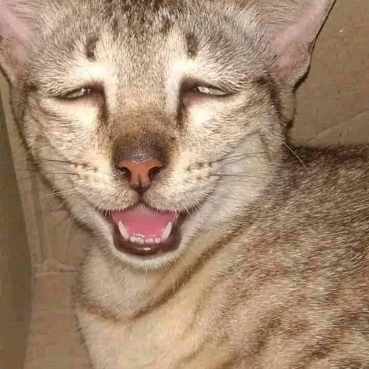

Street cats in
World need your
Support
Take action to help them!

adolf
Meet Adolf
Gender : male
Age : 1,2 years
Location : germany

Felico
Meet Felico
Gender : male
Age : 1,2 years
Location : Indonesia

Sakya
Meet Sakya
Gender : male
Age : 1,2 years
Location : Kota Bangun

Richo
Meet Richo
Gender : male
Age : 1,2 years
Location : Titi Papan